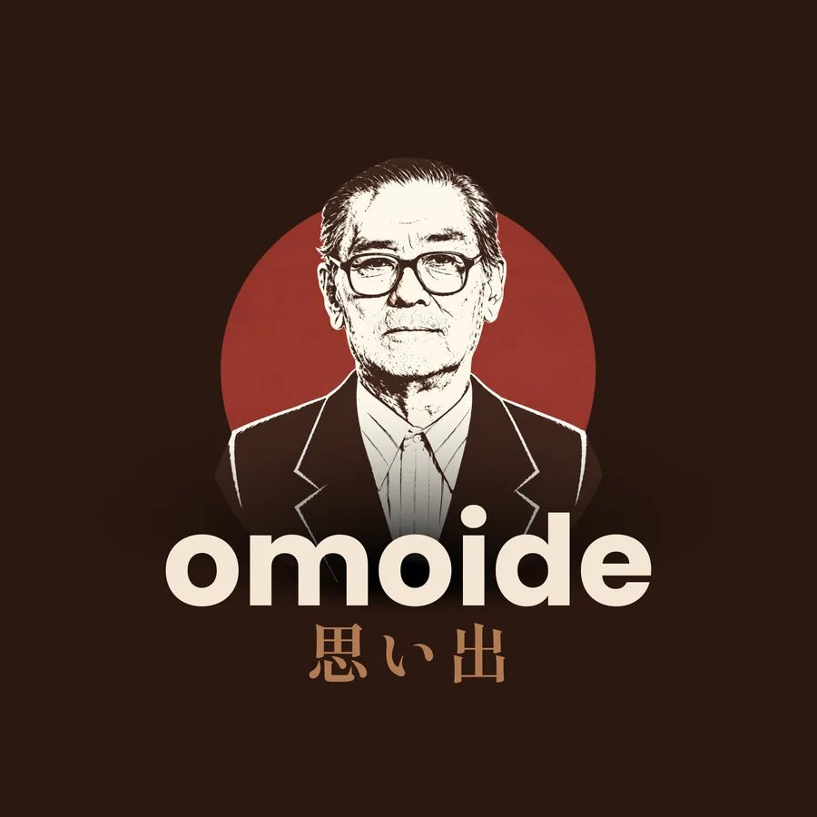

omoide思い出
É a lembrança carregada de emoção, a memória que se conta a alguém. O podcast nasce dessa ideia: contar as histórias de imigrantes japoneses a partir de memórias afetivas ligadas à agricultura.
心 (coração)
vem à tona
trailer: conheça o
podcast omoide

Memórias de imigrantes japoneses do Alto Tietê (SP),
contadas através da terra.
Três histórias, três gerações, uma pergunta:
o que fica?
sobre o podcast.
Omoide é um podcast narrativo documental em três episódios que registra as memórias afetivas de imigrantes japoneses e seus descendentes na região do Alto Tietê, em São Paulo, contadas através da agricultura. Histórias que a terra guarda.
Ao acompanhar as trajetórias de Sakae Urakawa, Sakae Muramatsu e Ercílio Hoçoya, o projeto reflete sobre trabalho, pertencimento e sucessão entre gerações, preservando histórias que correm o risco de se perder.
O projeto é autoral de conclusão de curso em Jornalismo assinado por Mariana Nacashima.
episódios.
créditos.
- [Apresentação]
- Mariana Nacashima
- [Reportagem]
- Mariana Nacashima
- [Direção criativa]
- Mariana Nacashima
Prof. Ana Vasconcelos - [Repórter e roteirista]
- Mariana Nacashima
- [Edição]
- Mariana Nacashima
- [Identidade visual]
- Mariana Nacashima
- [Música tema]
- Japan’s Serenity
- [Efeitos sonoros]
- Wildfire Games (jogo 0 A.D.)
Mito551 (via Minetest Game)
Freesound.org - [Revisão e orientação de projeto]
- Prof. Ana Vasconcelos
- [Diagramação do site]
- Ygor Silva Matos
- [Realização]
- Universidade São Judas Tadeu